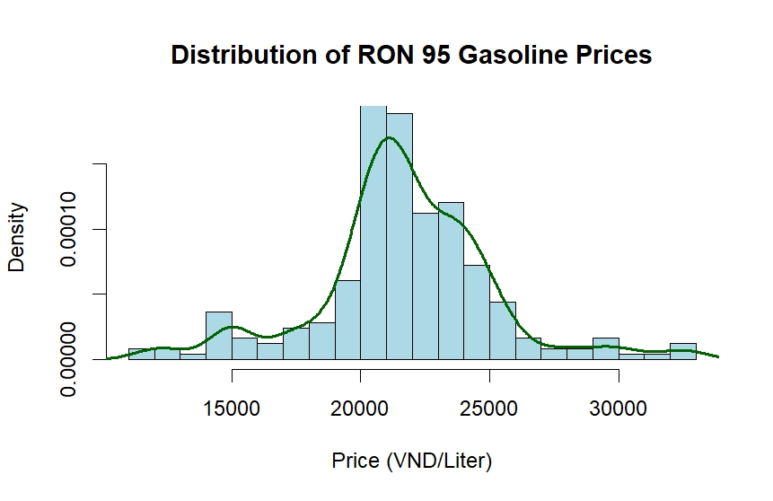
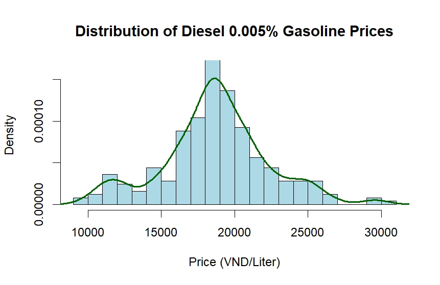
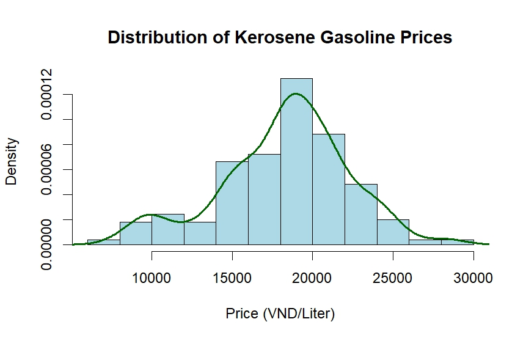
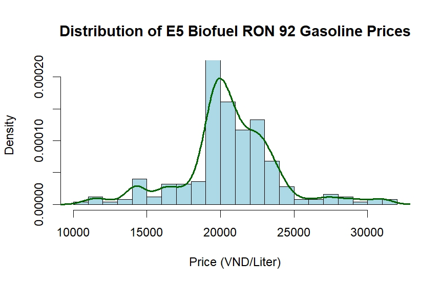
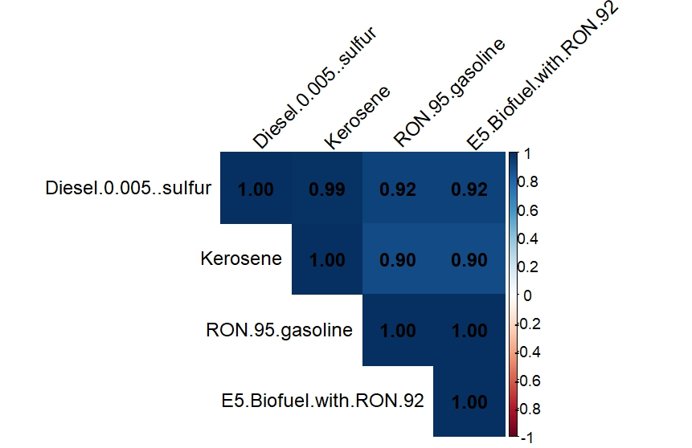

| 
| 
|


Trinh Linh Dan
This project works with a fuel dataset to do data cleaning using Excel, data analysis using R-studio.

The dataset contains detailed information on fuel prices in Vietnam getting from Petrolimex and PV oil, including weekly prices for different types of fuel across various regions.
First step in data cleaning involved handling missing values, correcting inconsistencies, and ensuring that the data was in a suitable format for analysis. Next, the data was aggregated in each oil company's dataset to calculate average weekly prices for each fuel type and region, which helped to identify trends and patterns in the data. For example, RON 95 fuel was listed as RON 95 type V zone 4 and RON 95 type V zone 5, which were taken average into a single category of RON 95 to simplify analysis.
Data from both companies were then merged to create a comprehensive dataset that included all relevant information for analysis. After, one final check for data quality (percentage of zeros, percentage of missing values, and outliers) was conducted to ensure the dataset was clean. Finally, the cleaned dataset was structured to facilitate analysis, with clear variable names and consistent formatting.
The dataset contains 249 weekly observations of different fuel prices across regions in Vietnam.

The graph tracks fuel prices from 2019 to 2026, covering:
Four fuel types (Diesel 0.001%, E10 Ron 95, Fuel Oil 3% and Fuel Oil 3.5%) were introduced into the market significantly later than the others, resulting in incomplete and irregular time ‑ series records. Because their early data points are missing or fragmented, these fuels do not provide a continuous timeline for comparison. To maintain analytical consistency and avoid distortion in trend analysis, the incomplete segments for these late ‑ entry fuels were removed from the dataset
Below is the histogram and distribution of each types of fuel that were consistently tracked over the entire period.
 |
 |
 |
 |
Combining with some tests conducted like Jarque - Bera test, skewness and kurtosis check, we can conclude
The original fuel ‑ price data was reported at irregular intervals, with gaps and inconsistent spacing between observations. Combined with the non ‑ normality detected in the distribution analysis, this made the raw series unsuitable for direct time‑series modeling.
To create a more uniform structure, the data was interpolated to a monthly frequency, effectively transforming the irregular weekly (or semi‑weekly) updates into a consistent 30 ‑ day average series. This step preserves the underlying trend while producing a smoother, analysis‑ready dataset


After transforming the data, the month ‑ on ‑ month percentage changes were visualized using a bar chart. The pattern shows:
This chart highlights the short ‑ term sensitivity of fuel prices to global shocks and policy adjustments.

|
|
|
|
Rolling volatility measures how much prices fluctuate within a moving window. Examining 3‑month, 6‑month, and 1‑year windows provides a layered view of market stability:
Together, these measures help distinguish between temporary shocks and persistent volatility, which is essential for forecasting and risk assessment.

The correlation matrix shows very strong positive correlations among all fuel types, with coefficients typically above 0.90. This indicates that:

Residual scatterplots compare the unexplained parts (or residuals) of two fuel price series after removing their trends or fitted values. If the residuals of two fuels still move together, it means they share deeper structural connections beyond the main trends. Otherwise, if residuals show no pattern (a random cloud), the two fuels behave independently after accounting for the main trends.
Looking at the residual scatterplots, it shows that residual scatterplots would likely show: all the fuels share the remaining residual's structure, the shocks, and the deviations from their trends are still highly correlated. This means that even after removing the main trends, the fuels still move together in their unexplained parts. They are not independent from each other, as expected from the characteristics of fuel markets.
Multicollinearity is a test to show where it occurs, two or more variables move so closely together that they essentially carry the same information. In regression or forecasting models, this creates problems because model cannot distinguish which variable is actually driving the outcome, and coefficients become unstable or inflated; small changes in data can cause large swings in model estimates; then interpretation becomes unreliable.
In this case, multicollinearity test results, cointegration test results, together with the residual analysis above shows that fuels move almost identically. They cannot be used as independent predictors. Any regression including multiple fuels will have unstable coefficients.

A simple linear regression was used to predict RON95 prices based solely on Diesel prices. This is a deliberately naive model, intended as a baseline rather than a final forecasting tool. The resulting prediction line tracks the actual RON95 series reasonably well, especially during broad market movements such as the sharp rise in 2022 and the subsequent decline. However, the model struggles to capture finer details and short‑term fluctuations, leading to noticeable deviations during periods of high volatility.
Since fuels are not cointegrated, each series should be modeled individually. Suitable models include: